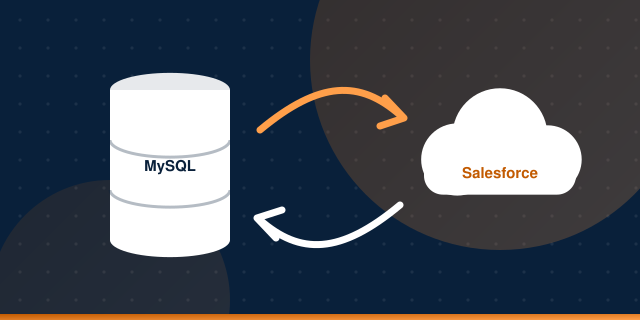

Salesforce Data Synchronization
Tech Stack
SalesforcePHPMySQLData Loaderdataloader.ioAuroraEventbrite API
Overview
Bulk data import and export between external databases and Salesforce, plus automated synchronization between MySQL and Salesforce.
Key Responsibilities and Achievements
- Imported and exported bulk data (CSV/Excel) from databases such as TAM into Salesforce, mapping tables and columns to Salesforce objects and fields, including tasks, activities and files.
- Automated synchronization between SQL and Salesforce data using core PHP, SQL and PHP cron jobs.
- Maintained API calls inside and outside the organization using PHP and AWS servers.
- Built processes between MySQL and Salesforce, and created campaigns, workflows and process builders.
- Managed users, profiles and permissions, and maintained workflow rules and validations.
- Wrote database queries and PHP scripts to map, filter and import data into Salesforce.